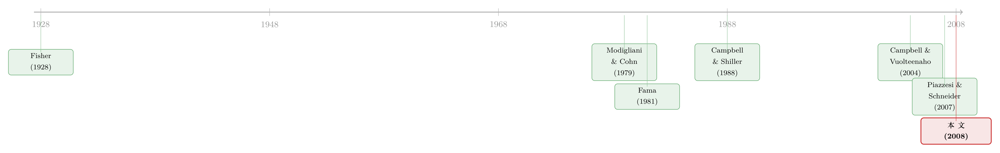

通胀降了，房价为什么疯了？——一场藏在「月供」里的货币幻觉
本文读的是 Brunnermeier & Julliard (2008, Review of Financial Studies)：当人们患上 货币幻觉 (money illusion) 时，通胀的下降反而会把房价推上天。作者把房价租金比 (price–rent ratio) 拆成一个「理性成分」和一个「隐含错误定价」，发现通胀和名义利率能解释错误定价绝大部分的时间序列波动——而那个看似最讲道理的「倾斜效应」，几乎无力为这一发现辩护。
1 一个让人不安的巧合
先看一组事实。过去几十年里，许多发达国家的房价都经历过急涨急跌的「狂热—崩塌」循环；与此同时，从上世纪八十年代起，这些国家的通胀又在长期、缓慢地往下走。把两条线叠在一起，你会发现一个让人不太舒服的巧合：通胀往下掉的那些年，恰恰是房价往上窜的那些年。
这就奇怪了。按照我们在教科书里学到的费雪关系 (Fisher relation, Fisher (1930))，名义利率应该和预期通胀一比一地同向变动；通胀降，名义利率也降，但真实利率不该动。真实利率不动，房子的真实价值凭什么动？
可现实偏偏在动，而且动得很猛。于是一个自然的问题浮出水面：通胀和房价之间这条又稳又强的负相关，到底是理性的，还是非理性的？Brunnermeier 和 Julliard 这篇 2008 年发在 RFS 上的文章，给出的回答简洁得近乎挑衅——是货币幻觉。
2 故事的主角：一个只会比「月供」的买房人
要理解作者说的「货币幻觉」，不需要任何数学。想象一个普通人站在售楼处，他要决定是租房还是买房。他怎么算这笔账？很多人就是简单地把每月房租和每月月供摆在一起比一比：月供比房租低，划算，买；月供比房租高，不划算，租。
问题就出在这个「月供」上。固定利率按揭的月供，是按名义利率算的。当通胀下降、名义利率随之下降时，月供数字也跟着变小，买房人一看：哎，月供变便宜了，买房更划算了。
但这里藏着一个致命的错觉。名义利率的下降里，绝大部分只是通胀预期的下降，真实利率几乎没变。一个理性的人应该意识到：通胀低了，未来我的名义工资增长也会慢下来，而那笔固定的名义月供在未来会被通胀「侵蚀」得更少——也就是说，未来真实的还款负担其实变重了。
患有货币幻觉的人看不到这一层。他错误地把名义利率当成真实利率，于是把通胀下降误读成「真实利率下降」，进而低估了未来按揭的真实成本。结果，每当通胀下行，他就对房子产生了一股「凭空」的购买冲动，把房价往上推。
这正是 Modigliani 和 Cohn (1979) 当年针对股票市场讲的同一个故事：投资者用名义利率去资本化真实的现金流，导致高通胀时股价被低估。Brunnermeier 和 Julliard 做的事，是把这套逻辑搬到房地产市场——而且他们论证，房市才是检验货币幻觉的最佳实验室，因为这里没有机构投资者，又有 卖空约束 (short-sale constraints)，套利者根本没法把错误定价纠正掉。（关于通胀如何通过信念渠道扭曲资产决策，可参见《通胀来了，股票是「真资产」还是「纸面财富」？》。）
3 模型：1/r 还是 1/i，一字之差
作者用一个极简的模型把直觉钉死。在动态最优化框架下，一套房子的真实均衡价格 \(P_t\) 应该等于未来真实房租 \(\{L_t\}\) 的现值加上转售价值的现值：
$$P_t = \tilde{E}_t\!\left[\sum_{\tau=1}^{T-1} m_{t,t+\tau}\, L_{t+\tau} + m_{t,T}\, P_T\right]$$
这里 \(m_{t,\tau}\) 是 \(t\) 到 \(\tau\) 的随机折现因子，\(\tilde{E}_t\) 是基于 agent 主观信念的期望算子。这一步只是定义，没有争议。
接着， 为了把直觉看清楚，作者跟 Modigliani 和 Cohn (1979) 一样，先退到一个没有不确定性、真实房租恒定的简单世界。在这个世界里，当 \(T\to\infty\)，一个理性经济体的均衡房价租金比是：
$$\frac{P_t}{L_t} = E\!\left[\sum_{\tau=1}^{\infty}\frac{1}{\left(1+r_{t,t+\tau}\right)^{\tau}}\right] = \frac{1}{r_t}$$
其中 \(r_{t,t+\tau}\) 是从 \(t\) 到 \(\tau\) 的真实无风险收益率，\(r_t\) 是真实无风险利率。最后一个等号在真实利率恒定时精确成立。这个式子干净得令人安心：房价租金比等于真实利率的倒数。 真实利率不动，比值就不动。
然后，真正关键的一步出现了。 如果 agent 患有货币幻觉，他会把（恒定的）名义无风险收益率 \(i\) 当成真实的来用。于是他给出的，是下面这个被通胀扭曲的估值：
第一个约等号忽略了 Jensen 不等式项，第二个约等号在名义利率 \(i_t\) 恒定时精确成立。
一字之差——理性的人用 \(1/r_t\)，幻觉的人用 \(1/i_t\)——结论就天翻地覆。因为名义利率 \(i_t = r_t + \pi_t\)（费雪关系），通胀 \(\pi_t\) 一降，幻觉者眼中的折现率就降，房价租金比就升。模型由此直接给出了三个可以拿去做检验的回归变量：\(1/i_t\)、\(1/r_t\) 和通胀 \(\pi_t\)。 作者还特别提醒：\(1/i_t\) 在 \(i_t\) 较小时对 \(i_t\) 高度非线性——这一点 Himmelberg、Mayer 和 Sinai (2005) 也曾就真实利率独立强调过。
4 识别策略：把房价租金比「劈成两半」
模型给了方向，但实证上要把「错误定价」从房价里干净地剥出来，并不容易。作者分两步走。
第一步， 不看房价，看房价租金比。为什么？因为土地成本、建造成本、人口结构、房屋质量这些基本面 (Mankiw and Weil (1989)) 会同时、对称地影响房价和房租。盯住二者之比，就把这些基本面波动在很大程度上「约掉」了。Gallin (2004) 发现房价与房租是协整的，房价租金比能很好地预测未来的价格和房租变化；而 Gallin (2003) 用面板协整检验否定了房价与收入的协整——这意味着文献里常用的「房价—收入」误差修正模型会导致错误推断。所以，比起房价收入比，房价租金比是更干净的研究对象，也和股市里常用的股价股息比 (price–dividend ratio) 一脉相承。
第二步，也是这篇文章方法上的核心： 用 Campbell 和 Shiller (1988) 的动态对数线性分解，把房价租金比拆成两块——一块是理性成分（未来预期房产投资收益率 + 未来房租增长率，并纳入了房产特有的风险因子，比如搬家概率与房价横截面变异的交互），另一块是隐含的错误定价 (mispricing)。
这里有个微妙的计量陷阱。Ferson、Sarkissian 和 Simin (2002) 指出，当被解释变量和预测变量都高度持续时，样本内回归的 \(R^2\) 和显著性会被向上偏估。房价租金比恰恰高度持续。作者的应对是：构造预测误差、剔除掉持续成分，再来看通胀对错误定价的解释力，并辅以 Monte Carlo 模拟来确认结果稳健。
拆完之后，问题就变得异常清爽：在控制了所有理性渠道之后，通胀还能解释多少错误定价？ 如果货币幻觉的故事是真的，答案应该是「一大块」。
5 数据与主要结果：通胀解释了「错误定价」的近一半
作者主要拿英国房市当案例（样本 1966:Q2–2004:Q4，外加 1982:Q1–2004:Q4 的通胀挂钩债券数据）。为什么先看英国？因为英国房价数据质量更好、样本更长，按揭普遍可携带 (portable)，而且早就有了对通胀免疫的 价格水平调整按揭 (price-level-adjusted mortgage, PLAM) 和 累进还款按揭 (graduated payment mortgage, GPM)——这几点让推断更锋利、更稳健。随后再用美国数据（1970:Q1–2004:Q3）研究区域异质性。
结果有多强？英国那张图（论文 Figure 2）一目了然：仅用通胀一个变量拟合出的序列，几乎严丝合缝地贴住了估计出来的错误定价序列，二者都呈现出尖锐而持续的上行。
更硬的证据在美国数据的单变量回归里（论文 Table 4）。把错误定价度量 \(\hat{\psi}_t\) 分别回归到通胀、名义利率、名义利率倒数的对数上：
- 对通胀 \(\pi_t\)：系数
−6.65（t = 4.53），\(R^2 = .45\)； - 对名义利率 \(i_t\)：系数
−6.30（t = 3.18），\(R^2 = .28\)； - 对 \(\log(1/i_t)\)：系数
.141（t = 4.26），\(R^2 = .35\)。
也就是说，单单通胀一个变量，就能解释美国房市错误定价 45% 的时间序列波动，而且符号完全是货币幻觉所预言的方向：通胀和名义利率越低，错误定价越高。另一个错误定价度量 \(\hat{\varepsilon}_t\) 对通胀的回归系数更是高达 −10.2（t = 5.15），\(R^2 = .48\)。
那么理性成分这边呢？预期未来房租超额增长率对通胀的回归 \(R^2\) 高达 .65，说明通胀确实也通过理性渠道（房租粘性、对实体经济的负面影响）影响房价租金比；但未来房产投资风险溢价对通胀、名义利率几乎没有显著关系。把账算总：房价租金比对通胀的弹性约为 8.7，对名义利率的弹性约为 5.1，而其中最大的一块贡献，来自通胀（名义利率）对错误定价的影响——不是来自理性渠道。
6 反转：那个最「讲道理」的对手，倒下了
到这里，一个挑剔的读者一定会皱眉：通胀和房价的负相关，未必非得是货币幻觉啊。会不会有更理性的解释？作者最精彩的部分，恰恰是亲手把几个理性的「对手假说」一个个按倒。
对手一：倾斜效应 (tilt effect)。 Lessard 和 Modigliani (1975)、Tucker (1975) 早就指出，在固定名义月供、固定名义利率的按揭下，通胀会把真实还款负担向合同的早期年份倾斜。在存在借贷约束时，这会限制人们能借到的按揭规模，从而压低房屋需求。这听上去完全理性，似乎能解释通胀与房价的负相关。
但作者反问：如果倾斜效应是理性的痛点，那市场早该有解药了。 PLAM 和 GPM 这类对通胀免疫的按揭工具，至少从 1970 年代起就摆在购房者面前——可几乎没人用。更要命的是，作者在 Section 3.1 做了一系列检验，结论是：倾斜效应极不可能是通胀与房价之间这条经验联系的驱动力。 一个理性框架解释不了「为什么人们宁可被倾斜效应困住，也不去用现成的免疫工具」。
对手二：锁定效应 (lock-in effect)。 当通胀和利率往上爬时，那些过去锁定了低名义利率、又不可携带按揭的家庭，可能不愿卖掉现有房子去换更好的。这会压低高质量房屋的需求。注意，这个效应是非对称的——它只在利率高于锁定利率时才发挥作用。作者据此设计检验：在错误定价度量上，引入一个「过去四个季度利率是否上行」的虚拟变量 \(d_t\)，跑下面这组回归：
$$\mu_t = \hat{a} + \hat{b}_{i1}\, d_t\, i_t + \hat{b}_{i2}\,(1-d_t)\, i_t + \hat{e}_{it}$$ $$\mu_t = \hat{a} + \hat{b}_{\pi 1}\, d_t\, \pi_t + \hat{b}_{\pi 2}\,(1-d_t)\, \pi_t + \hat{e}_{\pi t}$$
锁定效应预言上行段和非上行段的系数应当不同，即 \(\hat{b}_{\cdot 1}\neq\hat{b}_{\cdot 2}\)。但数据无法拒绝 \(\hat{b}_{\cdot 1}=\hat{b}_{\cdot 2}\)。考虑到英国按揭大多可携带，这个结果并不意外；而即便换成可携带性差得多的美国数据，相关假设（除了滚动样本里 \(R^2\) 与利率水平相关的那一条）也大多被拒绝。锁定效应，出局。
对手三：代理效应 (proxy effect)。 Fama (1981) 那条经典思路是：高通胀是未来经济变差的坏信号，于是通胀「代理」了糟糕的基本面，进而压低真实资产价格。Poterba (1984) 则指出一条方向相反的理性渠道：通胀通过税收（名义按揭利息可抵税）降低住房的税后真实使用成本，本该抬高房价。作者的回答很坦诚：代理效应得到的是微弱的支持，货币幻觉得到的才是强支持——而且二者并不互斥。
这正是全文的「反转」：通胀与房价的负相关，并非源于哪个聪明的理性机制，而是源于一个朴素到几乎不像在做决策的行为——买房人只会拿月供去比房租。
7 一块意外的拼图：区域为什么涨得不一样？
如果货币幻觉是个总量现象，它怎么解释美国不同地区房价涨幅天差地别——沿海疯涨、中西部平静？这看上去像是对货币幻觉的反驳，作者却把它变成了又一块支持证据。
关键在 住房供给弹性 (housing supply elasticity) 的异质性。因为人口密度不同，美国各州的供给弹性差异很大。把「全国性的货币幻觉冲击」乘上「各地不同的供给弹性」，就能得到我们在数据里看到的区域价格分化（这与 Gyourko、Mayer 和 Sinai (2006) 的观察一致）：同样一股由通胀下行催生的、凭空的需求，砸在供给僵硬的沿海，价格就飞起来；砸在供给富有弹性的内陆，就被新建房屋吸收掉了。Davis 和 Palumbo (2006) 还提醒，一旦把房价拆成土地价值和建筑价值，区域差异其实没那么极端——住宅用地的升值是广泛现象。货币幻觉 + 供给弹性异质性，于是同时解释了总量的狂热与区域的分化。
8 文献脉络
这篇文章站在两条河流的交汇处。一条河， 是「通胀与资产价格」的老问题：Lintner (1975)、Fama 和 Schwert (1977)、Gultekin (1983) 记录了名义股票收益与通胀的负相关，这与费雪关系 (Fisher (1930)) 相悖，成了著名的谜题。Fama (1981) 用代理效应解释它；而 Modigliani 和 Cohn (1979) 给出的另一个解释——货币幻觉——则成了这条河真正的源头。此后 Ritter 和 Warr (2002)、Campbell 和 Vuolteenaho (2004)、Cohen、Polk 和 Vuolteenaho (2005) 在股市里反复检验并支持了「Modigliani–Cohn 假说」。
另一条河， 是货币幻觉本身的思想史：从 Fisher (1928) 对货币幻觉的定义，到 Tobin (1972) 那句名言「经济理论家所能犯的最大罪过，莫过于假设存在货币幻觉」，再到 Blinder (2000) 半带调侃的「我被说服了——货币幻觉是生活的事实」。心理学的支撑则来自 Tversky 和 Kahneman (1981) 的框架效应、Shafir、Diamond 和 Tversky (1997) 的名义/真实框架、Genesove 和 Mayer (2001) 关于「不愿实现名义损失」的证据，以及 Shiller (1997a, 1997b) 的问卷。理论上，Basak 和 Yan (2005)、Fehr 和 Tyran (2001) 证明了即便只有少数人有幻觉，对均衡价格的影响也可能很大。

把两条河汇到一起，Brunnermeier 和 Julliard 的贡献就清楚了：他们是据其所知，第一个把货币幻觉的实证检验从股市搬到房市的人。借助 Campbell–Shiller 分解和对倾斜、锁定、代理三大对手的逐一排除，他们把「通胀下行驱动房价狂热」这件事，从一个巧合提升为一个有机制、有证据的论断。这也与同期 Piazzesi 和 Schneider (2007) 关于通胀分歧推高房价的工作遥相呼应。
9 评论与延伸（Q&A + 研究方向）
(a) 几个可能的疑问
Q：货币幻觉和倾斜效应，到底差在哪？它们不是都说「通胀影响月供从而影响房价」吗？
差在「理性与否」和「方向」。倾斜效应是理性的：通胀真的把真实还款负担推向早期，在借贷约束下真实地压低了你能借的额度，它预言通胀升会压房价。货币幻觉是非理性的：买房人误把名义利率当真实利率，根本没意识到真实负担的时间分布，它预言通胀降会抬房价。作者的检验显示，免疫工具（PLAM/GPM）早已存在却无人问津，倾斜效应难以自圆其说。
Q：通胀和房价的负相关，会不会只是「通胀代理了坏的基本面」？
这正是 Fama (1981) 的代理效应。作者没有否认它存在，但把它放进同一套分解里后发现：理性的风险溢价成分对通胀几乎不显著，而错误定价成分对通胀高度显著（\(R^2\) 高达 .45）。代理效应得到的是弱支持，货币幻觉得到的是强支持。二者不互斥，但主角是后者。
Q：用房价租金比而不是房价收入比，是不是在挑对自己有利的指标？
不是任意挑的。Gallin (2003) 用面板协整检验否定了房价与收入协整，意味着房价收入比的误差修正模型会导致错误推断；而 Gallin (2004) 表明房价与房租协整、房价租金比有预测力。更重要的是，房价租金比能对称地约掉同时影响价与租的基本面，逻辑上也对应股市里成熟的股价股息比方法。
Q：房价租金比那么持续，回归的高 \(R^2\) 会不会是 Ferson 等人警告的「伪回归」？
作者直面了这个问题。他们先剔除房价租金比的持续成分（构造预测误差），再看通胀的解释力，并用 Monte Carlo 模拟给出系数和 \(R^2\) 的中位数与 95% 置信区间来确认稳健性。结果在英美两套数据里都站得住。
Q：既然是「幻觉」，为什么理性套利者不去纠正它、赚一笔？
因为房市的摩擦极大。住宅市场以个人家庭为主，机构投资者几乎缺席；更关键的是存在卖空约束——你没法做空一栋你不看好的房子。De Long 等 (1990) 的噪声交易者风险、Abreu 和 Brunnermeier (2003) 的同步风险，都说明即便理性者看穿了错误定价，也未必敢、未必能纠正它。这也是作者强调「房市是检验货币幻觉的好实验室」的原因。
Q：为什么同样的货币幻觉冲击，各地房价涨幅差那么多？
因为住房供给弹性各地不同（人口密度差异）。同一股凭空需求，在供给僵硬的沿海推高价格，在供给富弹性的内陆被新建房屋吸收。货币幻觉（总量）× 供给弹性（区域）= 我们看到的区域分化，与 Gyourko、Mayer 和 Sinai (2006) 一致。
(b) 几个可能的研究问题与提案
1. 货币幻觉与公司债的「名义票息幻觉」
【经济故事】买房人盯月供，债券投资者会不会盯名义票息？在低通胀环境里，高名义票息的老债券可能被赋予非理性的溢价，而通胀下行时这种偏好被放大。机制上与本文同源：把名义量当真实量。 【可行性】中。需要 TRACE 成交数据 + 票息/到期结构，构造「票息错觉」度量并控制久期与信用风险；识别难点在于把票息效应从税收、流动性中干净剥离，可借鉴本文的「分解 + 排除对手假说」思路。
2. 外资持有人能否缓解房市的货币幻觉？
【经济故事】本土家庭主导住宅市场、又受卖空约束，所以幻觉无人纠正。那么以理性、跨境视角进入的外资买家集中的城市，通胀—房价的错误定价弹性会不会更小？外资在这里扮演「准套利者」。 【可行性】中偏低。需要城市层面的外资购房份额（部分国家有交易登记），用本文的房价租金比分解构造错误定价，再看其对通胀的弹性是否随外资份额下降。识别担忧：外资偏好本就与房价动态内生，需要可携带性、签证政策等外生变动做工具。
3. 通胀挂钩按揭的「自然实验」
【经济故事】本文论证 PLAM/GPM 无人使用是货币幻觉的旁证。若某国某时点强制或大力推广了通胀挂钩按揭，错误定价弹性应当下降。这是对机制最直接的检验。 【可行性】高（若能找到政策变动）。识别策略为 双重差分 (difference-in-differences, DiD)，处理组为推广地区/时段。难点是找到足够干净、足够外生的推广事件，避免与利率周期混淆。
4. 把货币幻觉接到信贷流动性上
【经济故事】通胀下行催生的凭空需求，需要按揭信贷来兑现。供给弹性之外，信贷供给弹性会不会是另一个放大器？银行在低通胀期更愿放贷，进一步喂大幻觉驱动的房价。 【可行性】中。需要按揭发放数据（如 HMDA）+ 区域通胀，识别上可用银行层面的资本/存款冲击作为信贷供给的外生变动，与本文的总量错误定价度量交互。
5. 货币幻觉的代际差异
【经济故事】经历过高通胀年代的人，是否更不容易把名义利率当真实利率？若是，幻觉的强度应随人口结构（经历过通胀的世代占比）系统变化。 【可行性】中偏低。需要微观购房者年龄/经历数据 + 区域房价租金比；识别借鉴 Malmendier 式「经历塑造信念」的思路，难点在于把经历效应与财富、生命周期阶段分开。
参考文献
- Brunnermeier, M. K., & Julliard, C. (2008). Money Illusion and Housing Frenzies. Review of Financial Studies 21(1), 135–180.
- Campbell, J. Y., & Shiller, R. J. (1988). The Dividend-Price Ratio and Expectations of Future Dividends and Discount Factors. Review of Financial Studies 1(3), 195–228.
- Campbell, J. Y., & Vuolteenaho, T. (2004). Inflation Illusion and Stock Prices. American Economic Review 94(2), 19–23.
- Fama, E. F. (1981). Stock Returns, Real Activity, Inflation, and Money. American Economic Review 71(4), 545–565.
- Fisher, I. (1928). The Money Illusion. New York: Adelphi.
- Gallin, J. (2004). The Long-Run Relationship between House Prices and Rents. Finance and Economics Discussion Series, Federal Reserve Board.
- Genesove, D., & Mayer, C. (2001). Loss Aversion and Seller Behavior: Evidence from the Housing Market. Quarterly Journal of Economics 116(4), 1233–1260.
- Lessard, D., & Modigliani, F. (1975). Inflation and the Housing Market: Problems and Potential Solutions. In New Mortgage Designs for Stable Housing in an Inflationary Environment.
- Modigliani, F., & Cohn, R. A. (1979). Inflation, Rational Valuation and the Market. Financial Analysts Journal 35(2), 24–44.
- Piazzesi, M., & Schneider, M. (2007). Inflation Illusion, Credit, and Asset Prices. In Asset Prices and Monetary Policy, NBER.
- Poterba, J. M. (1984). Tax Subsidies to Owner-Occupied Housing: An Asset-Market Approach. Quarterly Journal of Economics 99(4), 729–752.
- Ritter, J. R., & Warr, R. S. (2002). The Decline of Inflation and the Bull Market of 1982–1999. Journal of Financial and Quantitative Analysis 37(1), 29–61.